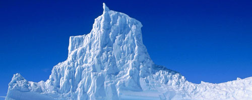

Quando si parla di glaciazioni ci si riferisce a periodi di tempo più o meno lunghi durante i quali la temperatura diminuì in misura notevole e i ghiacci si estesero, arrivando a coprire anche porzioni di terra molto vaste. Il nostro pianeta ha conosciuto quattro principali Ere glaciali, cioè periodi lunghi milioni di anni in cui si alternavano diminuzioni (periodi glaciali) e aumenti (periodi interglaciali) delle temperature. La Prima era glaciale si situa tra gli 800 e i 600 milioni di anni fa e fu probabilmente la più intensa: gli studiosi ritengono che quasi tutta la Terra fosse ricoperta da uno strato di ghiaccio, assomigliando così ad una palla di neve. La seconda durò dai 460 ai 430 milioni di anni fa, la terza dai 350 ai 260 milioni di anni. La quarta, e ultima, iniziò 40 milioni di anni fa, si intensificò attorno ai 3 milioni di anni e terminò circa 10 000 anni fa. In particolare, per quanto riguarda l'ultima glaciazione, sappiamo che la temperatura si abbassò in media di 10-12 gradi (in Europa si raggiungevano abitualmente i 25° sotto zero) e il livello dei mari scese di oltre 100 metri. Così, durante i periodi glaciali, ampie zone di superficie terrestre furono coperte dai ghiacci e molti fondali marini rimasero asciutti. In questo modo, regioni della terra che prima erano divise dal mare si ritrovarono unite: ciò permise agli uomini di spingersi oltre i confini già raggiunti e diffondersi in zone che, diversamente, sarebbero state inaccessibili. Durante i periodi di glaciazione, ad esempio, la punta orientale dell'Asia era unita alla punta occidentale dell'America del Nord: questo consentì ai primi gruppi di uomini di raggiungere l'inesplorato continente americano. Come è facile immaginare, i cambiamenti climatici causarono enormi sconvolgimenti negli habitat naturali, testimoniati, in Europa, dal ritrovamento di resti di diverse specie animali oggi scomparse, quali ad esempio i mammut. Gli uomini riuscirono a sopravvivere grazie alle conquiste tecniche - soprattutto la costruzione di strumenti più perfezionati - che aumentarono le possibilità di procurarsi sempre del cibo, e alla scoperta del fuoco, indispensabile per la vita a temperature tanto basse.